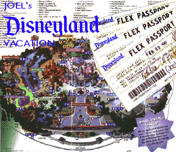
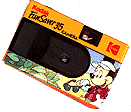

{kind=link}
{kind=link}
{kind=link}
{kind=link}
{kind=link}
{kind=link}
{kind=link}
{kind=link}
{kind=link}
{kind=link}
{kind=link}
{kind=link}
{kind=link}
{kind=link}
{kind=link}

Home
February 7, 1997
Zip-A-Dee-Doo-Dah,
Zip-A-Dee-Ay,
My oh my what a wonderful day . . .
After three days at the Happiest Place on Earth, we asked Joel what was the best the Magic Kingdom has to offer, so we could present to you:
JOEL'S BEST OF DISNEYLAND
BEST OF FANTASYLAND
The all-around best ride of the park hands down was MR. TOAD'S WILD RIDE. A statue of Mr. Toad himself graces the entrance to his house as you wait in line to ride in an "ah-oo-gah" car that takes you through a fireplace, brick walls, head-on into a locomotive and straight to hell! We don't know the story of Mr. Toad, but he must have been very naughty!
BEST OF CRITTER COUNTRY
Coming in a very close second for all-around best ride of the park: SPLASH MOUNTAIN. A gentle ride in a hollowed-out log through tunnels filled with furry singing creatures precedes a free fall down a five-story waterfall! Barely reaching the 40 inch minimum height requirement, Joel went on this ride four times until we couldn't take anymore. See Joel and Daddy screaming down the falls!
BEST OF MAIN STREET, U.S.A.
Ride an old-time fire engine down Main Street, then ride an old-time double decker bus back while a barbershop quartet sings in the background!
BEST OF ADVENTURELAND
Little-known unadvertised attractions are the broken-down army jeep loaded with empty crates parked in front of the Enchanted Tiki Room (probably used as a fruit stand during the summer), and the cargo truck with a broken headlight parked in front of the Jungle Cruise. Too cool!
BEST OF TOONTOWN
GADGET'S GO-COASTER lasts about ten seconds. Joel's comment: "Let's do it again!"
BEST OF FRONTIERLAND
Get lost exploring the caves in TOM SAWYER'S ISLAND. But don't go into Injun Joe's cave (too dark and scary, even for Joel)!
BEST PLACE TO EAT
Pooh, Tigger, Eeyore, Pluto and Goofy party all day at GOOFY'S KITCHEN at the Disneyland Hotel during breakfast, lunch and dinner (Piglet is conspicuously absent). They all come to your table! It takes a little suspension of disbelief, even for Joel ("They're costume guys, Dad!") If you don't mind Goofy's cooking (served in an all-you-can-eat buffet style), and occasional pauses to sing Happy Birthday to patrons in the next table, this place is the best!
PICTURES!
Taken with a $9.00 disposable camera
.
Mommy and Joel stand along the Marina at the
DISNEYLAND HOTEL.
KING ARTHUR'S CAROUSEL in the center of Fantasyland -- a hundred horses and they're all white!
Outside of MR. TOAD'S WILD RIDE in Fantasyland.
With Mommy in front of the MATTERHORN bobsleds -- for Joel, just another rollercoaster with a scary monster with glowing red eyes (but deserves at least second run).
Joel is in the driver's seat as Joel and Daddy speed by in gas-guzzling car No. 6 at the Fantasyland AUTOPIA.
Officer Friendly poses with Joel in front of the old-time DOUBLE-DECKER BUS on Main Street, U.S.A.
Joel drives a fire engine with Daddy in TOONTOWN.
Joel waits for the MARK TWAIN as it steams around the riverbend in Frontierland.
Mommy and Joel get a front seat on the MARK TWAIN riverboat.
Mommy and Joel wait in line at the HAUNTED MANSION off of New Orleans Square.
Mickey and Minnie lead the Cruisin' the Kingdom Cavalcade surrounded by roller-blading construction workers in Mickey's OLD RED CAR.
Aladdin, Jasmine, and the Genie ride by in "3 WISHES" during the Cruisin' the Kingdom Cavalcade. Cool hot rod, Genie!
TIGGER'S HOT ROD rolls down Main Street during the Cruisin' the Kingdom Cavalcade while Piglet waves from the rumble seat. .STP stands for Super Tigger Power!
Waiting with Mommy and Daddy at the MONORAIL STATION in Tomorrowland (taken by a friendly tourist).
Home